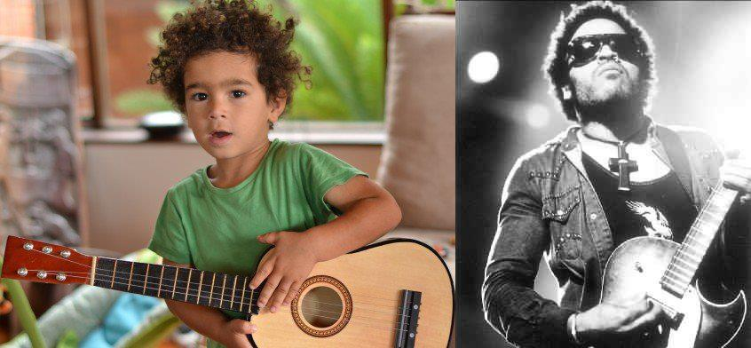

Stage-Naming Your Kids

During my Masters at Warwick University, I once booked a band practice room. The guy asked me what name to make the booking under. I said “Mwanji” and he asked “Is that your name or the band’s name?”. He was impressed that it was mine. I immediately resolved to give my children names cool enough to use as stage names.
Keziah was inspired by Keziah Jones: we were watching him play a fantastic set a Couleur Café 2009 and Iris said “Keziah Ezana would sound really great.” And it does.
Ayanda Lily combines quirky and gentle in a way suitable for either a Starbucks-ready guitar-strumming singer-songwriter or a Joanna Newsom-like outlier. Or she could do death metal and use it ironically.